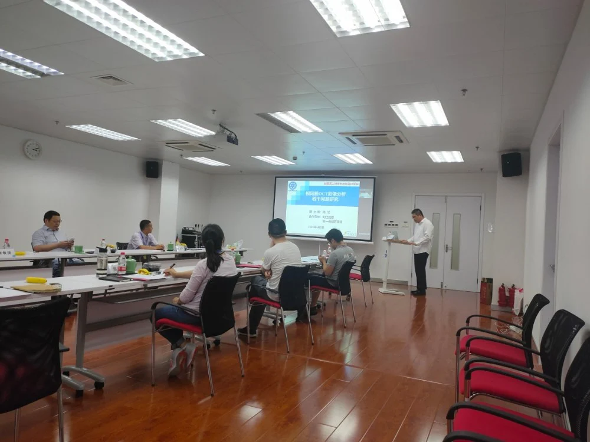
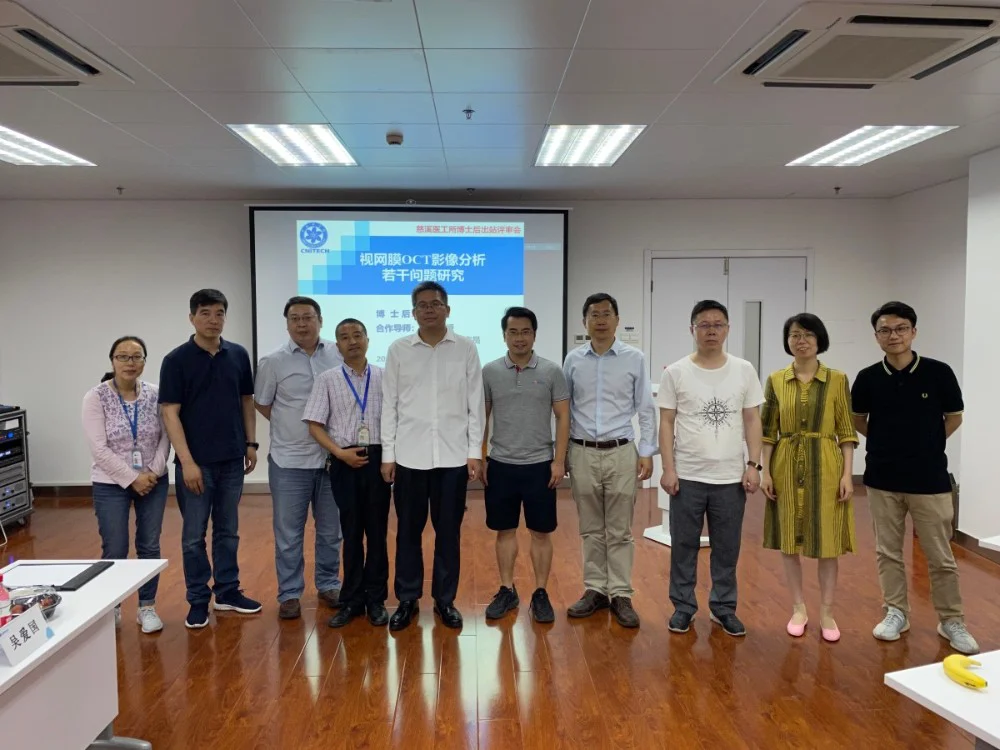

2020年6月2日下午，iMed(中国)团队迎来了首位博士后陈浜的出站评审会。宁波市人社局领导和慈溪市人社局领导应邀参会。评审专家组由刘江教授、赵一天副研究员等6名专家组成。受新冠肺炎疫情影响，远在深圳的刘江教授以网络视频会议的方式全程参加了评审会。慈溪市人社局相关科室负责人、宁波材料所/慈溪医工所博士后管理负责人和慈溪医工所部分在站博士后列席评审会。
宁波市人社局领导和慈溪市人社局领导分别致辞。刘江教授向参会人员简单介绍了陈浜博士在站期间的一些基本情况。陈浜博士做了题为《视网膜OCT影像分析若干问题研究》的出站报告。他从研究背景与意义、主要研究内容、在站期间的研究成果等多个方面向评审专家作了详细汇报，并就与会专家提出的问题进行了认真解答。
陈浜博士是iMed(中国)团队第1位博士后，同时也是慈溪医工所工作站和宁波材料所流动站联合招收的第1位博士后，合作导师为刘江教授(流动站导师)和赵一天副研究员(工作站导师)。在站期间，他紧紧围绕视网膜OCT影像分析的3个重要问题(视网膜OCT图像降噪、视网膜OCT图像合成和视网膜OCT图像识别)展开研究：1)提出了一种基于超分辨率重建和关键点对齐的视网膜OCT图像散斑降噪方法；2)从临床教学和辅助诊断两个方面分析了生成式对抗网络用于合成视网膜OCT图像的可行性；3)提出了一种采用矩阵平方根规范化协方差池化网络的视网膜OCT图像识别方法。在站期间，主持或参与浙江省重点研发计划项目、浙江省博士后择优资助项目等2项，并参与了国家重点研发计划、国家自然科学基金等多个国家级项目的申请。发表或录用论文3篇，其中SCI论文2篇，EI论文1篇，另有1篇SCI论文和1篇中文核心期刊论文已投在审，申请发明专利2项。
评审专家组经过评议，认为陈浜博士工作努力，治学严谨，研究成果有创新，圆满完成了各项科研任务，一致同意其出站。

